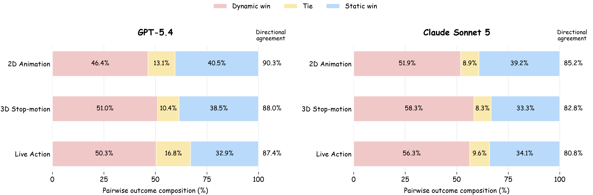

RARE: Reinforcement Learning
with Adaptive Rubric Evolutionfor Open-Ended Generation
Abstract
Verifiable rewards have advanced reinforcement learning in mathematics
and code. Open-ended generation, however, has
no automatic verifier of overall quality: a response
must satisfy multiple requirements, and many different responses can
be valid. Rubric-based reinforcement learning makes these requirements
explicit, but learning progresses unevenly. Some criteria become fully
satisfied and
lose their ability to distinguish outputs, while
others remain informative.
We introduce
Reinforcement Learning with Adaptive Rubric Evolution
(RARE), which uses current-policy feedback to guide
which criteria change and what their replacements assess. At the sample level, RARE replaces criteria that are fully
satisfied across a query’s current outputs with checks of remaining
quality differences. It
retains all other criteria and scores, preserving
feedback that still distinguishes outputs. Within this update rule, we
compare rewarding desired qualities with penalizing observed flaws.
We study video script generation, where a model must produce coherent,
executable narratives under user constraints. Across
2D animation, 3D / stop-motion, and live action,
targeting observed flaws performs best, with a mean gain of
3.82 points over matched static rubrics. Model and human preferences support these gains, and separate
experiments show improvements on writing and general generation
benchmarks. We release the training code and
5,989 query–rubric pairs.
Adaptive rubric evolution
For each query, RARE samples eight outputs and
scores them against the current rubric. A criterion is saturated
when all eight valid judgments assign its maximum score. RARE
replaces up to three saturated criteria,
rescores the same outputs
under the replacements, and uses the updated rewards in the current
policy update.
Sample-level rubric evolution. Unchanged criteria retain their
original scores.
RARE · Negative
Targets observed flaws in the current outputs.
RARE · Positive
Describes desired qualities the outputs should satisfy.
RARE · Mixed
Combines flaw-focused and desired-quality criteria.
These three sample-level variants use the same replacement rule.
Higher reward scores always indicate better quality.
Results
Script generation
We evaluate on 596 held-out queries using 12 fixed
metrics covering query fulfillment, narrative coherence, cinematic
executability, and dramatic effectiveness. Scores are normalized to
0–100; RL results average four training seeds.
RARE with Negative replacements improves all three tasks
and achieves the largest mean gain over its matched static baseline.
Adaptive rubrics improve both task-level and sample-level
training.
In this figure, Task-Dynamic is RARE (Task-level), and
Sample-Dynamic is RARE (Sample-level, Negative).
Mean averages the three task scores equally. Δ Mean is the gain
over the corresponding static baseline. All scores are
higher-is-better.
Method
Replacement
2D animation
3D / stop-motion
Live action
Mean
Δ Mean
Task-level rubrics
Task-Static
—
75.41
74.44
68.59
72.81
—
RARE (Task-level)
Task rubric rewrite
76.27
75.56
69.84
73.89
+1.08
Sample-level rubrics
Sample-Static
—
74.70
72.94
68.29
71.98
—
RARE (Sample-level)
Negative
78.25
76.84
72.31
75.80
+3.82
RARE (Sample-level)
Positive
76.37
75.59
69.91
73.96
+1.98
RARE (Sample-level)
Mixed
77.09
75.67
71.13
74.63
+2.65
Pairwise preference
GPT-5.4 and Claude Sonnet 5 blindly compare RARE (Negative) with
Sample-Static on all 596 test queries, in both script orders.
Both judges favor RARE in every video type.
More than 80% of preferences agree after reversing script order.

Dynamic denotes RARE (Negative); Static denotes
Sample-Static. Directional agreement measures consistency after
reversing the presentation order.
Human preference
Five computer science PhD students blindly judge 60 script pairs,
with three independent ratings per pair. Majority votes favor RARE
in 38 pairs.
38913
RARETie / unresolvedStatic
70.8% preference score when
ties and unresolved cases count as half a win (95% bootstrap CI:
60.0–80.8%).
Beyond script generation
Separate policies trained for writing and general generation also
benefit from rubric evolution.
Model
BiGGen 1–5
WritingBench 1–10
Base
4.035
8.22
Static
4.152
8.26
RARE (Negative)
4.259
8.34
Official benchmark macro averages; each task uses matched data
and training settings.
Script examples
Nine selected prompts, with outputs from the initial model and
RARE.
Language
English translations of the Chinese outputs. Scores evaluate the
original scripts.
These examples compare the initial model with RARE. They are
selected individual outputs; aggregate comparisons with
static-rubric training appear in the Results section.